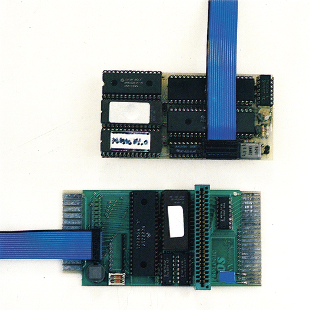

Kompatibler als das Original
Nach ProLogic-Dos gibt es jetzt ProLogic-Dos Classic. Dieses neue System unterscheidet sich unter anderem dadurch von seinem Vorgänger, daß es auch mit der neuen 1541C läuft.
Das Diskettenlaufwerk 1541C enthält eine neue Platine, auf der die gesamte Elektronik untergebracht ist und wurde außerdem im Betriebssystem geringfügig modifiziert.
Die Folge dieser Verbesserungen (?) ist, daß zum Beispiel die Programme »Elite« und »Exdos und Diskdoktor« nicht mehr funktionieren. Darüber hinaus wurde die Hardware des Diskettenlaufwerks derart geändert, daß kein vorhandener Parallel-Speeder für die 1541 mehr funktioniert.
Jann Datentechnik hat dieses Manko erkannt und ein neues System auf den Markt gebracht. Dieses ProLogic-Dos Classic ist im wesentlichen das »normale« ProLogic-Dos. Es wurde jedoch eine völlig neue Platine (Bild 1) für die Floppy-Station entwickelt. Die Betriebs-Software des Beschleunigers im Computer und in der 1541 wurde überarbeitet und optimiert.

Mit der neuen Platine und der neuen Software funktioniert ProLogic-Dos Classic ohne Änderung sowohl mit der 1541 als auch mit der 1541C. Da die Platine in der Floppy-Station nicht mehr den eingebauten VIA 6522 sondern einen eigenen Baustein verwendet, sind auch keine Schwierigkeiten mit den 2 MHz Taktfrequenz zu befürchten, wie sie beim alten System zuweilen auftraten. Schwierigkeiten mit unterschiedlichen Versionen der 1541 treten ebenfalls nicht mehr auf, da die neue Platine sehr platzsparend untergebracht ist und nicht mehr mit anderen Bauteilen und Kühlkörpern auf der Floppy-Platine »kollidiert«.
Den eigentlichen »Hammer« des ProLogic-Dos Classic haben wir Ihnen bisher aber noch vorenthalten. Es handelt sich um das Kompatibilitätsproblem der neuen 1541C. Mit dem Einbau von ProLogic-Dos Classic wird dieses Laufwerk zur alten 1541 kompatibler als das Originalgerät. Das heißt zum Beispiel, daß Programme wie »Elite« und »Exdos und Diskdoktor« mit ProLogic-Dos Classic laufen; ohne jedoch nicht!
Die eigentlichen Leistungsdaten von ProLogic-Dos Classic sind denen von ProLogic-Dos sehr ähnlich. Lediglich bei der Geschwindigkeit macht sich ein Unterschied bemerkbar. ProLogic-Dos Classic ist deutlich schneller als sein Vorgänger und verfügt über eine Vielzahl an optimierten Funktionen. Das Speichern von 202 Blöcken dauert ziemlich genau 10 Sekunden. Lädt man sie wieder in den Computer, so muß man sich ungefähr 4½ Sekunden »gedulden«. Zum Löschen des 202-Block-Files benötigt ProLogic-Dos Classic 4,4 Sekunden. Das Formatieren einer Diskette dauert etwa 12 Sekunden.
IEEE-Schnittstelle auf Wunsch
ProLogic-Dos Classic enthält zwar nicht so viele Extras im Betriebssystem des Computers wie beispielsweise andere Beschleunigungssysteme. Dafür wurden jedoch die RS232-Routinen erhalten, was besonders für DFÜ-Fans interessant sein dürfte. Benötigen Sie keine RS232-Schnittstelle am User-Port, so können Sie auch einen eingebauten IEEE-488-Bus am User-Port inklusive Kabel erhalten. Eine an den User-Port angeschlossene SFD 1001 wird dann automatisch erkannt und angesprochen. Natürlich können dann auch andere Massenspeicher mit IEEE-488-Bus an den C 64 angeschlossen werden.
Das Betriebssystem des Computers enthält eine Funktionstastenbelegung für Anzeige des Directory ohne Programmverlust, Laden aus dem Directory und andere nützliche Funktionen. Die Floppy-Station bekommt unter ProLogic-Dos Classic einige neue Befehle, die zum Beispiel das Formatieren auf 40 Spuren (»749 BLOCKS FREE«), das Sichern von Files gegen Löschen und eine Status-Anzeige erlauben. Ein stufenweises Zurückschalten von ProLogic-Dos Classic auf das Original-Betriebssystem ist zwecks besserer Kompatibilität zwar möglich, aber nur selten notwendig.
Die gesamten, eben genannten, Befehle sind auch schon unter ProLogic-Dos verfügbar. Bei ProLogic-Dos Classic wurde lediglich die Geschwindigkeit in der Floppy-Station erhöht, so daß Befehle wie Validate jetzt mit einer beinahe atemberaubenden Geschwindigkeit ablaufen.
Der Preis von ProLogic-Dos Classic ist 286 Mark für die normale Version. Diese Version beinhaltet eine Platine für die 1541 und eine Platine mit integrierter Centronics-Schnittstelle am Expansion-Port des Computers. Zusätzlich gibt es eine Diskette, auf der zum Beispiel einige Kopierprogramme und Utilities enthalten sind. Wollen Sie das IEEE-488-Software-Interface am User-Port inklusive Kabel haben, so sind noch 139 Mark zu bezahlen. Für alle, denen das ProLogic-Dos Classic am Expansion-Port zu teuer ist, gibt es eine abgespeckte Version, die über ein Parallelkabel am User-Port betrieben wird. Dadurch entfällt die teure Platine am Expansion-Port, was den Preis für ProLogic-Dos Classic auf 186 Mark drückt. In dieser Version ist allerdings keine Centronics-Schnittstelle und auch keine hardwaremäßige Umschaltung auf das Original-Betriebssystem mehr enthalten.
Fazit
Insgesamt betrachtet ist das neue ProLogic-Dos Classic ein sehr gutes und wegen seiner Kompatibilität (siehe 1541C) auch ein sehr interessantes System. Es kann in seinen sämtlichen Versionen empfohlen werden.
(ks)Info: Jann Datentechnik, Kaiserin-Augusta-Straße 13, 1000 Berlin 42, Telefon: (030) 75250-78 oder (030)75250-11
Michael Lamm Computersysteme, Schönbornring 14, 6078 Neu Isenburg 2, Telefon: (061 02) 52535